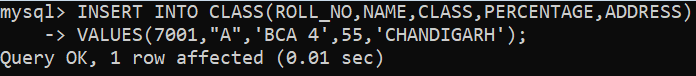
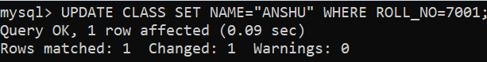

2. Data Manipulation Language
DML commands are used to modify the database. It is responsible for all form of changes in the database.
The command of DML is not auto-committed that means it can't permanently save all the changes in the database. They can be rollback.
Here are some commands that come under DML:
INSERT
UPDATE
DELETE
a. INSERT:
The INSERT statement is a SQL query. It is used to insert data into the row of a table.
Syntax:
INSERT INTO TABLE_NAME
(col1, col2, col3,.... col N)
VALUES (value1, value2, value3, ..0.. valueN);
Or
INSERT INTO TABLE_NAME
VALUES (value1, value2, value3, .... valueN);
For example:
INSERT INTO javatpoint (Author, Subject) VALUES ("Sonoo", "DBMS");

b. UPDATE:
This command is used to update or modify the value of a column in the table.
Syntax:
UPDATE table_name SET [column_name1= value1,...column_nameN = valueN] [WHERE CONDITION]
For example:
UPDATE students
SET User_Name = 'Sonoo'
WHERE Student_Id = '3'

c. DELETE:
It is used to remove one or more row from a table.
Syntax:
DELETE FROM table_name [WHERE condition];
For example:
DELETE FROM javatpoint
WHERE Author="Sonoo";